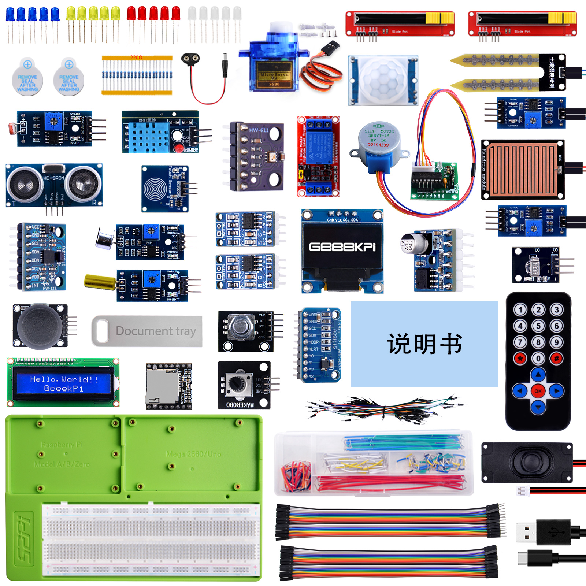

What's in the Kit?
-
The SKU of the Kit:
KZ-0068 -
Name of the Kit :
Universal Sensor Kit
Package Includes

About Universal Sensor Kit
Unleash Your Creativity with Our Universal Sensor Kit! Dive into the world of IoT and robotics with our comprehensive Universal Sensor Kit! Designed to support a variety of MCUs and Single Board Computers (SBCs), this kit is perfect for enthusiasts, educators, and developers.
What's in the Kit?
- LEDs and Buzzers: For basic signaling and alerts.
- Resistors (220ohm): To manage electrical current flow.
- 9g Servo Motors: For precise movement control.
- Linear Slide Potentiometers: For variable resistance control.
- 9V Battery DC Jack: For easy power supply integration.
- PIR Sensor: To detect motion in your projects.
- Soil Moisture Sensor: To monitor plant health.
- Raindrop Sensor: For weather-related applications.
- Infrared (IR) Receiver Module and IR Remote Control: For wireless operations.
- DHT11 Temperature and Humidity Sensor: For environmental monitoring.
- Photoresistor: For light sensing.
- BMP280 Barometric Pressure Sensor: For altitude and pressure readings.
- MPU6050 Gyroscope and Accelerometer: For motion tracking.
- Sound Sensor: To detect and measure noise levels.
- Tilt Sensor: For stability and orientation detection.
- CAN Bus Modules: For communication between microcontrollers.
- OLED 0.96 Inch Display: For a clear visual interface.
- DAC Amplifier Module: For high-quality audio output.
- 3W Speaker: For audible feedback.
- Single Channel Relay: For controlling high voltage or high current devices.
- Stepper Motor and its Driver Board: For precise rotational control.
- Rotary Encoder: For accurate position tracking.
- LCD1602 Display: For text and data presentation.
- PS/2 Joystick: For interactive control.
- Mini MP3 Module: For audio playback.
- Potentiometer Module: For adjustable resistance.
- ADS1115 ADC Module: For analog-to-digital conversion.
- DuPont Wires and Jumper Wires: For easy connections.
- Jumper Box: For organized wiring.
- USB Programming Cable: For device programming.
- 52Pi Experiment Tray: For a convenient and organized workspace.
Get Ready to Explore, Innovate, and Create!
With our kit, you'll receive not only the hardware but also a treasure trove of documentation and example codes for Arduino, Raspberry Pi Pico, and ESP32, ensuring a smooth and educational experience. Whether you're building a home automation system, a weather station, or a robot, our Universal Sensor Kit has everything you need to bring your ideas to life. Get ready to explore, innovate, and create with our Ultimate Sensor Kit!
Components Details
-
Arduino UNO R4 WiFi : The Arduino UNO R4 WiFi is powerfull development board.
-
9g Servo : A device for converting electrical signals into precise mechanical motion.
-
52Pi Experiment Platform : A platform for conducting experiments.
-
USB-C Programming Cable : For programming the Arduino UNO WiFi.
-
Jumper Wire Box : Contains pre-cut wires with connectors for temporary electrical connections.
-
LED Indicator Pack : Includes LEDs for visual indication in circuits.
-
Push Button : Used for manual input in electronic circuits.
-
Buzzer : An audio signaling device.
-
Battery Cap : For powering the Arduino board.
-
Slide Potentiometer : For powering the Arduino board.
-
PIR Sensor : For powering the Arduino board.